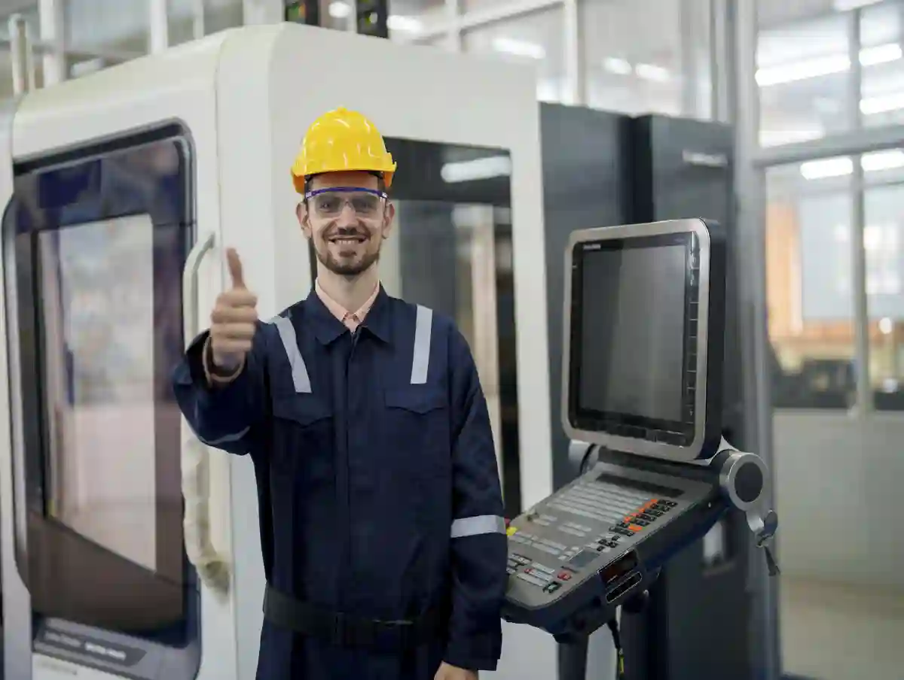
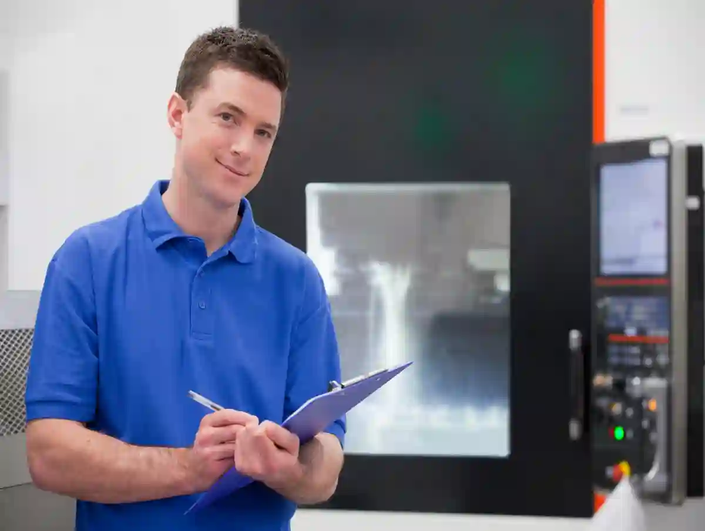

Talaşlı İmalat Firması Seçimi: 12 Kritik Kriter – Talaşlı İmalat Firması Seçerken Nelere Dikkat Edilmeli?
Bir üretici seçimi “fiyat teklifi” değil, risk yönetimi kararıdır. Yanlış tedarikçi; tolerans kaçıkları, montaj uyumsuzluğu, tekrar işleme (rework), teslimat gecikmesi ve en kötüsü sahada arıza şeklinde geri döner. Bu yüzden talaşlı imalat firması seçimi sürecini, teknik resimden sevkiyata uzanan ölçülebilir kriterlerle kurmak gerekir. İlk 10 dakikada şunu hedefleyin: Parçanızın kritik ölçülerini, fonksiyonunu, tolerans zincirini ve ölçüm/rapor ihtiyacını netleştirin. Bu netlik; hem cnc üretici kriterleri değerlendirmesini hızlandırır, hem de tekliflerin “elma-elma” kıyaslanmasını sağlar.
Bu yazıda; cnc imalat firması nasıl seçilir, fason imalat firması seçimi hangi teknik sorularla yapılır, imalat firması referansları nasıl doğrulanır ve kalite belgeleri cnc firma değerlendirmesi nasıl okunur sorularını, sahada işe yarayan kontrol listesine çeviriyoruz.
Talaşlı imalat firması seçimi, tolerans/ölçüm altyapısı, proses kabiliyeti, izlenebilirlik, termin güvenilirliği, revizyon yönetimi, kalite belgeleri ve doğrulanmış referans performansının birlikte puanlandığı teknik bir seçimdir.
Kategori Haritasını Görmeden Seçim Yapmayın (Hub Mantığı)
Doğru üreticiyi seçmek için önce bilgi mimarisini görün: Talaşlı İmalat Blog sayfası, bu kategorideki kavramları ve birbirine bağlı alt konuları bir arada toplar. Seçim sürecinde iki yazı özellikle “kanıt” üretir:
- CNC Üretimde Tolerans ve Hassasiyet Yönetimi (kritik ölçü/tolerans mantığı)
- Talaşlı İmalatta Yüzey Kalitesi (Ra/pürüzlülük ve fonksiyon ilişkisi)
Bu iki başlık, teklif aşamasında üreticinin “anladım” demesiyle yetinmeyip; ölçülebilir gereksinim istemenizi sağlar. Çünkü tolerans ve yüzey kalitesi net değilse, en iyi makine parkı bile doğru sonucu garanti etmez.

1) Parça Risk Sınıfını Belirleyin (Kritik Ölçü, Fonksiyon, Yük)
Parçanın risk sınıfı, talaşlı imalat firması seçimi sürecinin ilk filtresidir. Kritik ölçü (CTQ), fonksiyonel yüzey ve taşıdığı yük netleşmeden teklif kıyaslanmaz. ±0,02 mm altı tolerans, sızdırmazlık/merkezleme yüzeyi veya ısıl işlem varsa risk artar. Üreticiden bağlama sırası, kritik ölçü listesi ve ölçüm planını yazılı isteyin. Bu adım, yanlış tedarikçi riskini baştan ciddi biçimde düşürür.
Talaşlı imalat firması seçiminin ilk adımı “parça risk sınıfı”dır. Aynı üretici; bir parçayı sorunsuz üretirken, başka bir parçada sürekli sapma yaşatabilir. Sebep çoğu zaman parça tipinin üretim zorluğudur:
Risk Sınıfını 3 Soruyla Hızlı Tanımlayın
- Parça bir sistemin referans yüzeyi mi? (yataklama, merkezleme, sızdırmazlık)
- Toleranslar ±0,02 mm ve altına iniyor mu? (veya GD&T yoğun mu)
- Sonraki süreçte ısıl işlem, kaplama, taşlama var mı?
Eğer bu üçünden en az biri “evet” ise, cnc üretici kriterleri listesinde ölçüm/izlenebilirlik ağırlığını artırın. Çünkü küçük bir sapma, montajda büyük maliyet yaratır.
Teknik Resim Hazırlığı (Tedarikçiyi “Doğru Soruya” Zorlama)
Teknik resimde şu alanlar net değilse, tekliflerinizi sağlıklı kıyaslayamazsınız:
- Kritik ölçüler (CTQ) ve ölçüm yöntemi notu
- Yüzey pürüzlülüğü (Ra)
- Malzeme standardı + sertlik aralığı (varsa)
- Kenar kırma, çapak standardı
- Ölçüm raporu beklentisi (ilk parça / her lot / %100 kritik ölçü)
Burada amaç “çok detay” değil; doğru detayı vermektir. Böylece cnc imalat firması nasıl seçilir sorusu, “kim daha ucuz”dan “kim daha kontrollü”ye döner.
2) Proses Uygunluğu: Tezgâh Tipi Değil, Strateji Uygunluğu
Proses uygunluğu, tezgâh markasından çok strateji doğruluğudur. cnc imalat firması nasıl seçilir sorusunda; bağlama sayısı, referans datum’lar ve takım erişimi açıkça tariflenmelidir. Üretici DFM geri bildirimi verip deformasyon riskini yönetebilmeli. “Önce cepler mi dış form mu?” sorusuna net yanıt, tekrarlanabilirliği ve fire oranını belirler. Takım yolu simülasyonu ve fikstür planı sunabilmesi güven verir özellikle.
Bir üreticinin “CNC var” demesi, kabiliyet göstergesi değildir. Asıl fark; parçanızın geometrisine uygun işleme stratejisini kurabilmesidir.
Tornalama mı, Frezeleme mi, Hibrit mi?
- Dönel simetrik parçalar (mil, burç, flanş) → tornalama ağırlıklı
- Prizmatik parçalar (cep, kanal, 3D kontur) → frezeleme/dik işleme
- Her ikisi birlikteyse → bağlama ve referans stratejisi kritik
Seçim sırasında üreticiye şu “net” soruyu sorun: “Bu parçada referans yüzeyleri hangi sırayla işleyeceksiniz ve kaç bağlamada bitecek?” Cevap net değilse, fason imalat firması seçimi risklidir.
DFM Geri Bildirimi Verebiliyor mu?
İyi üretici, çizimi “üretilebilirlik” açısından sorgular: köşe radyüsü, takım erişimi, ince duvar deformasyonu, bağlama izi riski… Bu, hem maliyeti hem termin riskini düşürür. Aksi durumda çizim üreticiyi yönetir; üretici süreci yönetemez.
3) Makine Parkı Kanıtı: Liste Değil, Uygunluk Eşleşmesi
Makine parkı kanıtı; liste değil, parçaya birebir eşleşen üretim senaryosudur. Cnc üretici kriterleri içinde parça boyu, iş mili gücü, strok, takım magazini ve fikstürleme kapasitesi sorgulanır. Üretici “hangi tezgâhta, kaç bağlamada, hangi operasyonla” cevabını vermeli. Fotoğraf yerine iş akışı, ölçüm raporu örneği ve termin planı isteyin. Aksi halde kapasite iddiası, proje gününde sürpriz olur.
Makine parkı, doğru sorularla değerlendirildiğinde güçlü bir kanıttır. “Hangi makineler var?” kadar “benim parçam hangi makinede, hangi bağlamada üretilecek?” sorusu önemlidir.
Aymaksan’ın altyapı yaklaşımını görmek için: Makine Parkımız sayfasındaki çeşitlilik; tornalama-frezeleme-seri üretim ve destek prosesleri (kaynak vb.) gibi uçtan uca üretim modeline işaret eder. Makine parkı değerlendirirken; iş parçası boyutu, bağlama yöntemi, takım erişimi, tekrarlanabilirlik ve ölçüm raporlama kabiliyeti birlikte sorgulanmalıdır.
“Fotoğraf” Değil, Üretim Senaryosu İsteyin
Üreticiden şunu isteyin: “Bu parçayı hangi tezgâhta üreteceksiniz? Programlama kimde? İlk parça onayı nasıl yapılacak?” Bu cevaplar, talaşlı imalat firması seçimi için pratik sinyal üretir.
4) Ölçüm ve Kalite Altyapısı: “Son Kontrol” Değil, Proses Kontrol
Kalite, final kontrolde yakalanan hata değil; süreç içinde önlenen sapmadır. Cnc üretici kriterleri açısından kritik ölçüler için ilk parça onayı, lot içi kontrol sıklığı ve cihaz kalibrasyonu net olmalı. Ölçüm raporu datum’lara göre, revizyonla uyumlu hazırlanmalı. Proses kontrol planı yoksa seri tekrarlanabilirlik düşer, iade ve rework artar. SPC veya yöntemleri bilen ekip, sapmayı erken yakalar.
Kalite; üretim bittikten sonra yakalanacak bir şey değildir. Özellikle sıkı toleranslı işlerde kalite, prosesin içine gömülür. Bu yüzden talaşlı imalat firması seçimi yaparken ölçüm altyapısı ve raporlama disiplini “ana kriter” olmalı.
Ölçüm yaklaşımının nasıl kurgulanması gerektiğini sahaya uygun şekilde görmek için: Kalite Kontrol ve Ölçüm içeriği, proses içi kontrol mantığını iyi özetler.

Hangi Ölçüm Çıktılarını Talep Etmelisiniz?
Minimumda şu üç çıktı sizi korur:
- İlk parça ölçüm raporu (kritik ölçüler işaretli)
- Lot bazlı ölçüm planı (hangi ölçü, kaç parçada, hangi sıklıkta)
- Ölçüm cihazı/kalibrasyon izlenebilirliği
Eğer parçanız fonksiyonel yüzeylere sahipse; yüzey pürüzlülüğü ölçümü (Ra) ve gerekiyorsa geometrik tolerans doğrulaması da gündeme gelir.
Ölçüm Dili Aynı mı? (Birim, Referans, Şartname)
Birçok problem, “ölçtük” denmesine rağmen hangi referansa göre ölçüldüğünün belirsiz kalmasından çıkar. Üreticiyle şu konuları aynı sayfaya alın:
- Ölçümün referans datum’ları
- Kullanılan ölçüm yöntemi (komparatör, mikrometre, CMM vb.)
- Kabul kriteri (çizim revizyonu, standart)
Bu netlik, cnc imalat firması nasıl seçilir sorusunu “söze” değil “kanıta” bağlar.
5) Kalite Belgeleri ve Akreditasyon: Belge Var mı, Doğrulanabiliyor mu?
Belgeler güven verir, ama doğrulama yapılmadan karar verilmez. kalite belgeleri cnc firma seçiminde ISO 9001 kapsamı, belgelendiren kuruluşun akreditasyonu ve denetim periyodu sorulmalı. Asıl kanıt; ölçüm raporları, uygunsuzluk kayıtları ve düzeltici faaliyet disiplinidir. Ayrıca talaşlı imalat firması seçimi sırasında belgeyi değil, uygulanan sistemi değerlendirin. Belge numarasını doğrulatın, kapsamı okuyun, sahada ölçüm çıktısı görün mutlaka önce.
Kalite belgeleri cnc firma değerlendirmesinde kritik nokta; belgenin “var olması” değil, standardın süreçte “yaşaması”dır. ISO 9001, kalite yönetim sisteminin en yaygın çerçevesidir; TSE’nin resmi özetini referans almak, kavram karmaşasını azaltır: TS EN ISO 9001 Kalite Yönetim Sistemi.
Akreditasyon Neden Önemli?
Belgelendirme kuruluşlarının akreditasyonu, belgenin güvenilirliğini artırır. Türkiye’de akreditasyon çerçevesi için TÜRKAK duyuruları ve dokümanları referans alınabilir: TÜRKAK – ISO 9001 standard geçiş duyurusu.
Belgeler tek başına yeterli değildir; denetim disiplini, ölçüm raporları ve sahadaki referans performansıyla birlikte doğrulanmalıdır.
Belge “Kapsamı” Uyuşuyor mu?
ISO 9001 belgesinin kapsamı; “metal işleme / talaşlı imalat” gibi faaliyetleri gerçekten kapsıyor mu? Kapsam uyumsuzsa, belge seçim kriteri olarak zayıflar.
6) Referans ve İş Kanıtı: “Benzer Parça” Görmeden Onay Vermeyin
Referans, sektör adı değil “benzer zorluk” göstergesidir. imalat firması referansları istenirken aynı malzeme, aynı tolerans bandı ve benzer yüzey kalitesi aranmalı. Mümkünse numune parça, ölçüm raporu ve teslimat performansı birlikte incelenmeli. “Bu parçayı yaptık” sözü tek başına yetmez; doküman ve fotoğrafla desteklenmelidir. Hatta aynı parçayı kullanan bir müşteriden performans geri bildirimi alın kısa yazılı olarak.
İmalat firması referansları istenirken, “sektör adı” değil “benzer zorluk” arayın. İyi referans; parça malzemesi, tolerans seviyesi, yüzey kalitesi ve teslimat rutiniyle konuşur.
Referansı 4 Başlıkta Doğrulayın
- Benzer tolerans seviyesi üretmiş mi?
- Benzer malzeme işlemiş mi (paslanmaz, 7075, döküm vb.)?
- Ölçüm raporu / izlenebilirlik sunmuş mu?
- Termin performansı nasıl?
Ayrıca üreticinin kurumsal yaklaşımı (tecrübe, üretim kültürü, süreç yönetimi) güven sinyali üretir: Hakkımızda sayfasında bu yaklaşımın çerçevesini görebilirsiniz.
7) Teklif Kıyaslaması: Fiyatın Altındaki “Varsayımları” Açığa Çıkarın
Fiyatın altında gizli varsayımlar olabilir: ölçüm raporu hariç, sertifika yok, paketleme belirsiz. Fason imalat firması seçimi yaparken teklif satırlarını operasyon/bağlama, malzeme standardı, raporlama ve termin şeklinde standartlaştırın. Böylece elma-elma kıyas yapılır. Düşük fiyat çoğu zaman kapsam eksiltmesidir; hangi kalemin çıkarıldığını yazılı isteyin. Termin, ödeme ve revizyon şartlarını da aynı tabloda karşılaştırın mutlaka yan yana.
Talaşlı imalat firması seçimi çoğu zaman “en düşük teklif”e kayar; fakat düşük fiyatın altında genellikle görünmeyen varsayımlar vardır: ölçüm raporu yoktur, bağlama sayısı artmıştır, yüzey standardı muğlaktır, çapak standardı konuşulmamıştır, malzeme sertifikası dahil değildir.
Teklifin İçeriğini Standardize Edin (Elma-Elma Kıyas)
Üreticiden teklif satırlarını şu formatta istemek, pazarlığı teknik zemine taşır:
- Operasyonlar (Op10/Op20…) + bağlama sayısı
- Malzeme standardı + sertifika (EN 10204 3.1 gibi)
- Isıl işlem/kaplama/taşlama dahil-hariç
- Ölçüm raporu dahil-hariç (hangi ölçüler?)
- Termin ve sevkiyat şekli
Bu formatla, fason imalat firması seçimi “şeffaf” hale gelir.
Termin Gerçekçiliği: Kapasite ve Sıra Yönetimi
Termin sorusu sadece “kaç gün?” değildir. Üreticiye şunu sorun: “Bu iş hangi hafta işlenecek, hangi makinede, araya giren işler olursa plan nasıl güncellenecek?” Net cevap, süreç olgunluğunu gösterir.
8) İzlenebilirlik ve Revizyon Yönetimi: V2 Geldiğinde Ne Oluyor?
Revizyon geldiğinde süreç dağılmamalı. Talaşlı imalat firması seçimi için V2/V3 yönetimi; revizyon numarası, program arşivi, fikstür güncellemesi ve ölçüm planı değişikliğiyle izlenebilir olmalı. Yanlış revizyon üretimi en pahalı hatadır. Sevkiyatta revizyon/lot etiketi ve revizyona bağlı ölçüm raporu zorunlu kılın, kayıt tutun. Değişiklik onayı olmadan üretime başlamama kuralı koyun, imzalatın her teklifte bunu yazın.
Parça revizyonu (V2/V3) geldiğinde; eski programın, fikstürün ve ölçüm planının nasıl güncellendiği kritik hale gelir. Revizyon yönetimi zayıfsa; yanlış revizyon üretimi, sahada uyumsuzluk ve iade riskine dönüşür.
İstemeniz Gereken 3 Basit Kural
- Revizyon numarası teklifte ve sevkiyatta yazmalı
- Ölçüm raporu revizyona bağlı üretilmeli
- Program/operasyon kayıtları izlenebilir olmalı
Bu yaklaşım, cnc imalat firması nasıl seçilir sorusunda “kurumsal disiplin” filtresidir.
9) Malzeme ve Sertifika Disiplini: Aynı Malzeme, Farklı Davranış
Malzeme adı aynı olsa da parti farkı işlenebilirliği değiştirir. Cnc imalat firması nasıl seçilir sorusunda malzeme standardı, eşdeğer kabul şartı ve sertifika tipi (ör. 3.1) net yazılmalı. Isıl işlem hedef sertlik aralığı belirtilmeli. Sertifika yoksa izlenebilirlik kopar; yüzey, çapak ve tolerans davranışı tahmine döner, risk büyür. Kesim yönü, iç gerilim ve kaplama planı konuşulmalı.
Aynı isimdeki malzeme bile farklı partilerde farklı işlenebilirlik gösterebilir. Bu yüzden malzeme tedariki ve sertifikasyon disiplininin netleşmesi gerekir:
- Malzeme standardı ve eşdeğerleri
- Sertifika tipi ve içerik
- Isıl işlem isteniyorsa hedef sertlik aralığı
Türkiye’de kamu/ihale süreçleri ve yerli üretim belgelendirmesiyle ilişkili işleriniz varsa, resmi süreç çerçevesi için TOBB’nin açıklaması referans alınabilir: TOBB – Yerli Malı Belgesi.
Not: Bu linki “belge almak” için değil; “belge mantığını ve resmi çerçeveyi” doğru okumak için kullanın.
10) Üretim İletişimi: Tek Kişi mi, Sistem mi?
İletişim tek kişiye bağlıysa proje riski artar. Cnc üretici kriterleri kapsamında teklif/planlama, mühendislik ve kalite için net sorumlular tanımlı olmalı. Günlük takip, revizyon bildirimi ve uygunsuzluk kapanışı süreçle yürümeli. “Ustaya sorarız” yaklaşımı ölçeklenmez. Tek muhatap + kayıt sistemi, termin ve kalite istikrarını güçlendirir. Kim ne zaman cevaplar, acilde eskalasyon hattı nedir belirleyin ilk günden net.
Üreticiyle iletişim tek bir ustaya bağımlıysa, sürdürülebilirlik riski artar. İyi model:
- Teklif/planlama için net sorumlu
- Teknik resim analizi için mühendislik desteği
- Kalite raporu için ölçüm sorumlusu
Bu yapı yoksa; “sorun çıktığında” muhatap belirsizleşir. Talaşlı imalat firması seçimi için bu, sessiz ama büyük bir risktir.
11) Saha Performansı: Paketleme, Sevkiyat, Hasar ve Uygunsuzluk Yönetimi
Paketleme ve sevkiyat, ölçü kadar kritiktir. Fason imalat firması seçimi sırasında çizilmeye hassas yüzeyler için koruyucu film, ara ayırıcı ve darbe önleyici düzen sorulmalı. Etiketleme parça kodu, revizyon ve lot bilgisini içermeli. Hasar/uygunsuzluk prosedürü yazılı olmalı. Doğru paketleme, iade ve rework maliyetini düşürür, güven sağlar. Sevkiyat fotoğrafı ve koli içi liste talep edin ayrıca.
Kalite, sadece işleme tezgâhında bitmez. Yanlış paketleme; yüzey çiziklerine, kenar eziklerine ve ölçü kaçıklarına neden olabilir (özellikle işlenmiş referans yüzeylerde).
Sevkiyat Öncesi Kontrol Maddeleri
- Parça yüzeyleri için koruyucu (yağ/film/ara kağıt)
- Set içi ayırma (parça-parça çarpışma önlemi)
- Etiketleme: parça kodu, revizyon, lot bilgisi
- Ölçüm raporu ve sertifikaların dosyalanması
Bu disiplin, imalat firması referansları kadar değerlidir; çünkü gerçek performans “kapınıza geldiğinde” görünür.
12) Üretici Seçimi İçin Puanlama Modeli (Pratik Karar Matrisi)
Karar matrisi, seçimi sayısallaştırır. Talaşlı imalat firması seçimi için A sınıfı kriterler: ölçüm-raporlama, izlenebilirlik, revizyon yönetimi ve termin güvenilirliği. B sınıfı: makine parkı eşleşmesi, malzeme-sertifika disiplini, DFM desteği. C sınıfı: paketleme ve iletişim. Ağırlıkları parça riskine göre ayarlayın, puanı belgeyle doğrulayın. Eşik puan belirleyin; altı elenir, üstü teknik görüşmeye girer, karar hızlanır daha az tartışma.
Aşağıdaki model; satın alma ve mühendisliği aynı tabloda buluşturur. Her maddeyi 1–5 arası puanlayın, ağırlıkları parçanızın risk sınıfına göre değiştirin.
A-Sınıfı (Yüksek Etki) Kriterler
- Ölçüm altyapısı + raporlama disiplini
- Tolerans/GD&T okuma ve süreç kurma kabiliyeti
- Revizyon ve izlenebilirlik yönetimi
- Termin güvenilirliği + kapasite planı
B-Sınıfı (Orta Etki) Kriterler
- Makine parkı uygunluğu (parçaya göre)
- Malzeme/sertifika disiplini
- DFM geri bildirimi ve mühendislik desteği
C-Sınıfı (Destekleyici) Kriterler
- Paketleme/sevkiyat standardı
- İletişim ve proje takip disiplini
Bu modelle talaşlı imalat firması seçimi duygusal değil, sayısal hale gelir.
Türkiye’de Üretim Ekosistemiyle Uyum: Destek ve Finansman Bilgisi (Bağlam)
Bazen tedarikçi seçimi; sadece teknik değil, kapasite artırımı ve finansman ekosistemiyle de ilişkilidir. İmalat tarafındaki güncel program duyurularını takip etmek, tedarik zinciri risklerini öngörmenize yardım eder. Örnek bir resmi duyuru: KOSGEB – İmalat sanayine finansman programı.
Bu bağlantı, “üretici seçimi”nin doğrudan kriteri değildir; ancak kapasite/termin yönetimi açısından sektörel bağlam sağlar.
Uygulama Senaryosu: 1 Sayfalık “Teklif Talep Dokümanı” Şablonu
Talaşlı imalat firması seçimini hızlandırmanın en pratik yolu, tedarikçiye aynı formatta “mini şartname” göndermektir. Aşağıdaki maddeleri tek sayfaya koyun:
Teklif Talep İçeriği
- Parça adı/kodu + revizyon
- Teknik resim dosyaları (PDF + STEP)
- Malzeme standardı + eşdeğer kabul şartı
- Kritik ölçüler (CTQ) listesi
- Yüzey pürüzlülüğü (Ra) ve çapak standardı
- Ölçüm raporu beklentisi (ilk parça + lot)
- Lot miktarı ve yıllık tahmin (varsa)
- Termin hedefi + sevkiyat adresi
- Paketleme gereksinimi (çizilmeye hassas yüzeyler)
- Revizyon değiştiğinde süreç (V2/V3)
Bu şablon; cnc üretici kriterlerini teklif aşamasına gömer ve “sonradan sürpriz” riskini azaltır.
Sık Sorulan Sorular
CNC imalat firması nasıl seçilir?
Kritik toleranslarınızı ve ölçüm raporu ihtiyacınızı netleyin; ardından proses kabiliyeti, izlenebilirlik, termin ve revizyon yönetimini kanıt üzerinden puanlayın.
Fason imalat firması seçimi yaparken “en yaygın hata” nedir?
Teklifte kapsamı standardize etmeden fiyat kıyaslamak. Sonuç: ölçüm raporu/sertifika/kaplama gibi kalemler sonradan maliyete biner.
Kalite belgeleri cnc firma seçiminde tek başına yeterli mi?
Hayır. Belgeler çerçevedir; asıl kanıt ölçüm raporları, proses içi kontrol ve doğrulanmış imalat firması referanslarıdır.
Sonuç: Doğru Üretici, Daha Az Revizyon ve Daha Az Kayıp Demektir
Özetle; talaşlı imalat firması seçimi doğru yapıldığında, iş sadece “parça üretimi” olmaktan çıkar; tekrar edilebilir kalite, öngörülebilir termin ve daha düşük proje riskiyle sistemli bir iş birliğine dönüşür. Seçiminizi; ölçüm, izlenebilirlik, proses kabiliyeti ve revizyon yönetimi üzerine kurduğunuzda, fiyat tartışması da daha teknik ve adil hale gelir.
İhtiyacınız olan şey “çok kriter” değil; doğru kriter setidir.